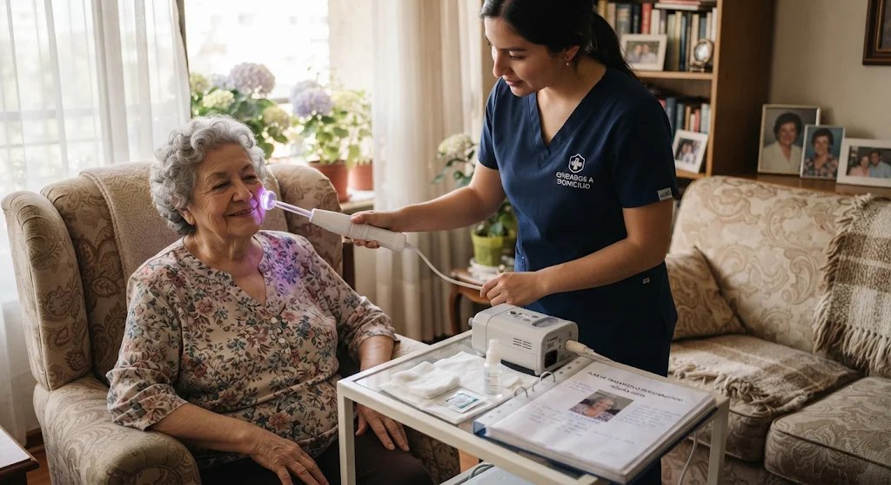
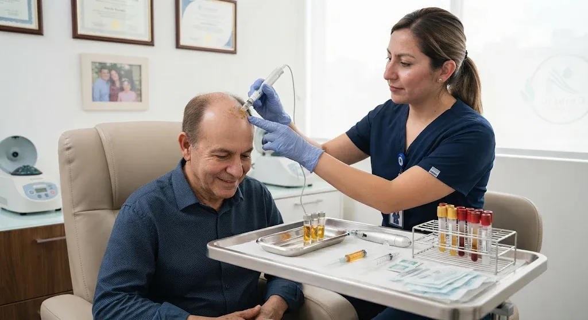

Facial
Facial
PRP Facial
Estimula la producción de colágeno y elastina con tu propio plasma. Regenera la piel, atenúa líneas de expresión y aporta máxima luminosidad.
Especialistas en Plasma Rico en Plaquetas (PRP) Facial, Capilar y Tratamientos de Alta Frecuencia con protocolos bioseguros y atención personalizada.
Procedimientos avanzados con resultados biológicamente comprobados para revitalizar tu belleza natural.
Facial
Estimula la producción de colágeno y elastina con tu propio plasma. Regenera la piel, atenúa líneas de expresión y aporta máxima luminosidad.
Tratamiento eficaz para frenar la caída del cabello y fortalecer el folículo piloso. Promueve un crecimiento capilar más fuerte y denso.

DermoestéticaTerapia descongestiva y bactericida ideal post-limpieza facial o tratamiento capilar. Cierra poros, oxigena la piel y estimula la circulación.

En Nurses Glow Up priorizamos tu salud y bienestar. Contamos con profesionales capacitados y protocolos bioseguros garantizados para la extracción, centritugado y aplicación de plasma y tratamientos dermoestéticos.
Analizamos el estado de tu piel o cabello antes de comenzar cualquier procedimiento.
Material descartable y equipamiento de centrifugado de grado médico certificado.
Bioestimulación natural sin químicos invasivos, con cambios perceptibles y duraderos.
"El PRP Facial superó mis expectativas. Mi piel quedó con una luminosidad increíble y las líneas finas en la frente se atenúan bastante. La atención es de primera y muy cuidadosa."
"Estaba perdiendo mucho cabello por estrés. Con el tratamiento de PRP Capilar noté mucha diferencia en la fuerza del pelo y comenzó a salir cabello nuevo a las pocas semanas."
"Me encantan las sesiones de Alta Frecuencia después de la limpieza. Te deja los poros cerrados, descongestiona al instante y la atención de las enfermeras es sumamente profesional."
"Llevaba años con muy poco pelo en la coronilla y pensaba que a mi edad ya no había nada que hacer. Decidí ser constante con las sesiones de PRP Capilar y, a partir del tercer mes, mi cuero cabelludo se sintió mucho más saludable y el cabello comenzó a verse más firme y con mejor densidad."
"Con los años mi cabello se fue afinando muchísimo y se me notaba bastante el cuero cabelludo. Gracias a la paciencia y constancia con el tratamiento, la caída disminuyó notablemente y hoy tengo un pelo más fuerte y con mayor volumen. La atención es cálida y muy profesional."
"Tenía entradas muy marcadas y poco pelo en la zona superior, así que empecé algo escéptico. Las enfermeras me explicaron que la clave era la constancia y tenían toda la razón: sesión tras sesión noté menos caída y un crecimiento más grueso y sano."
"Después de años probando champús sin resultados, llegué con el cabello muy escaso y debilitado. Seguí el protocolo al pie de la letra y la constancia dio frutos: mi cuero cabelludo mejoró muchísimo y recuperé la confianza al peinarme."
"A mis 67 años tenía el cabello muy ralo y frágil, pero quise darme una oportunidad. Cumpliendo religiosamente con cada sesión de PRP y Alta Frecuencia, el cambio fue progresivo pero real: el pelo se fortaleció y aparecieron brotes nuevos donde antes casi no había."
"Me preocupaba ver cada vez menos densidad en la parte frontal. No fue magia de un día para otro, pero con dedicación y constancia en el tratamiento logré frenar la caída y hoy noto mi cabello mucho más vivo, resistente y saludable."
El PRP es una muestra de tu propia sangre que se centrifuga para separar el plasma cargado de plaquetas y factores de crecimiento. Este concentrado biológico estimula la renovación celular, la síntesis de colágeno y la vascularización cuando se aplica en piel o cabello.
Es un procedimiento mínimamente invasivo. Se puede utilizar anestesia tópica local para maximizar el confort. Podrás reincorporarte a tus actividades diarias inmediatamente, siguiendo simples cuidados posteriores.
En PRP se suele recomendar un protocolo inicial de 3 sesiones distribuidas mensualmente, y luego mantenimientos periódicos. En Alta Frecuencia depende de si es un tratamiento puntual de descongestión o un ciclo de revitalización.
Te sugerimos mantenerte bien hidratado/a ingiriendo agua las horas previas, acudir con la zona limpia y sin maquillaje recargado. En la evaluación inicial resolvemos cualquier duda específica.
Descripción detallada del tratamiento...